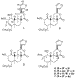
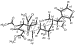

As part of our continuing investigations1-6 g of salvinorin A induces profound
hallucinations.10
Salvinorin A is the first diterpene to be identified as a hallucinogen in humans
and is one of the most potent naturally occurring compounds thus far isolated.11
We have discussed the effects of S. divinorum and salvinorin A in animals
and humans and warned of their potential to become drugs of abuse.5
During our research on S. divinorum, salvinorin A was first isolated from
a single pharmacologically active TLC band using a solvent system of 100/10/1
CHCl3/MeOH/H2O. Differences in potency between the
purified diterpene and the original TLC fraction led us to surmise that the
latter contained other strongly bioactive compounds that co-chromatographed with
salvinorin A during the chromatographic separation. Upon changing the solvent
system to 1/1 hexanes/EtOAc, the minor component became separated from
salvinorin A. Even though it is estimated that salvinorin C comprises only about
10% of the pharmacologically active TLC fraction, the rest being salvinorin A,
the fraction was significantly more potent than an equivalent amount of
salvinorin A alone. This seems to indicate that the new diterpene may also have
strong psychotropic activity.
g of salvinorin A induces profound
hallucinations.10
Salvinorin A is the first diterpene to be identified as a hallucinogen in humans
and is one of the most potent naturally occurring compounds thus far isolated.11
We have discussed the effects of S. divinorum and salvinorin A in animals
and humans and warned of their potential to become drugs of abuse.5
During our research on S. divinorum, salvinorin A was first isolated from
a single pharmacologically active TLC band using a solvent system of 100/10/1
CHCl3/MeOH/H2O. Differences in potency between the
purified diterpene and the original TLC fraction led us to surmise that the
latter contained other strongly bioactive compounds that co-chromatographed with
salvinorin A during the chromatographic separation. Upon changing the solvent
system to 1/1 hexanes/EtOAc, the minor component became separated from
salvinorin A. Even though it is estimated that salvinorin C comprises only about
10% of the pharmacologically active TLC fraction, the rest being salvinorin A,
the fraction was significantly more potent than an equivalent amount of
salvinorin A alone. This seems to indicate that the new diterpene may also have
strong psychotropic activity.
Air-dried, pulverized leaves (0.49 kg) of S. divinorum were extracted
as before2 with ether, and salvinorins were isolated by repeated
flash column chromatography. Final purification of salvinorin C was achieved by
HPLC.12
Repeated recrystallization from hexanes/EtOAc provided pure salvinorin C
(1)13
(38.5 mg): mp 196-198 C, [ ]22D +49.3
(c 0.61, CHCl3).
]22D +49.3
(c 0.61, CHCl3).
|  |
Salvinorin C (1) has the molecular formula
C25H30O9, and its IR spectrum suggests the
presence of an ,-unsaturated ester
(1715 cm-1), as well as another ester and a -lactone (1755 and 1735
cm-1, respectively). Its complete structure was elucidated
by the use of 1H and 13C NMR spectroscopy. NMR data were
compared with those of salvinorin A (2) and the acetate derivatives of
the major product obtained by the NaBH4-reduction of salvinorin A.
Partial structures deduced by the analysis of NMR data are indicated in
connecting thick lines (Figure 1). Although no splitting was visible between H-1
and H-10 in the 1H NMR spectrum of salvinorin C
(J1,10 < 0.8 Hz), irradiation of the H-1 peaks sharpened
the H-10 singlet. In addition, at the same time the H-3 peaks collapsed into a
doublet, confirming the presence of the W-shape coupling between H-1 and H-3
(J = 1.4 Hz). The connectivity between the C-12 and the furan group was
established by the detection of the weak coupling between H-12 and H-16
(4J12,16 = 0.8 Hz).
|  | Figure 1 Partial structures and their connectivity (bold lines) established by 1H and 13C NMR spectroscopy. |
In an effort to further ascertain the structure of salvinorin C, salvinorin A
(2) was reduced with NaBH4 in isopropyl alcohol (35 C, 2.5 h). As we reported earlier,2
the reaction produced a 2.3:1 mixture of cis-diol 4 and its C-8
epimer14
in 87% combined yield. Attempts at directly forming the 1,2-diacetate from diol
4 proved virtually impossible with Ac2O/pyridine, even at
elevated temperatures, presumably as a result of the severe steric hindrance of
the 1-OH imposed by the two
1,3-diaxially juxtaposed methyl groups. Instead, the formation of 2-monoacetate
62 was observed. Therefore, in analogy to a similar situation
encountered in our study on forskolin,15
diol 4 was first treated with trimethyl orthoacetate at 100 C in the presence of a catalytic amount of
acetic acid. Immediate acid-catalyzed hydrolysis of the resulting 1,2-cyclic
orthoacetate provided 1-monoaceate 516 in 83% yield,
consistent with the general observation on the selective formation of the axial
monoester of diols obtainable upon acid hydrolysis of their cyclic ortho
ester derivatives.17 Acetylation of 5 under standard
conditions then afforded the desired 1,2-diacetate 718 in 94%
yield.
Comparison of the 13C NMR chemical shifts of salvinorin C (1), monoacetates 5 and 6, and diacetate 7 (Table 1) gave further credence to the proposed structure of salvinorin C. In addition, examination of the 1H NMR spectra of salvinorin C (1) and diacetate 7 was informative in deducing the A-ring stereochemistry of both compounds. A long-range W-type coupling (1.2 Hz) was observed between the two equatorial Hs at C-1 and C-3 in diacetate 7 as in the case of salvinorin C (vide ante).
These salvinorin compounds from S. divinorum closely resemble a large
number of neoclerodane diterpenes isolated from Latin American Salvia
plants.19
Acknowledgment
This work was supported in part by research grants from the NIH (to M.K.) and the University of Michigan College of Pharmacy (to L.J.V.).
 Northeast Louisiana University.
Northeast Louisiana University.{kind=link}
{kind=link}